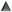

Filter-Liste
Das Filter-Liste listet alle verfügbaren Filter. Sie können in diesem Fenster Filter hinzufügen, ändern, entfernen, testen oder pausieren lassen.
- :
- Diese Spalte zeigt, ob ein Filter geeignet und verfügbar ist, wenn der Dienst und/oder vorige Filter unverändert sind, wie im Filter-Infobereich eingestellt.
 :
:- Entsprechend zeigt diese Spalte, dass ein Filter verfügbar ist, wenn der Status sich geändert hat.
 :
:- Diese Spalte zeigt, dass der Filter benutzt werden soll, wenn der Status des Dienstes und/oder der vorigen Filter ein Fehlschlag ist.
- Art:
- Diese Spalte listet auf, welches Filtermodul dieser Filter benutzt. Die Filter benutzen Module, um bestimmte Aktionen auszuführen, z.B. einen Textblock zu löschen, Text zu finden usw.
- Status:
- Diese Spalte zeigt, ob ein Filter momentan verfügbar ist oder pausiert.
- Name:
- Diese Spalte zeigt die Namen, die Sie den Filtern gegeben haben.